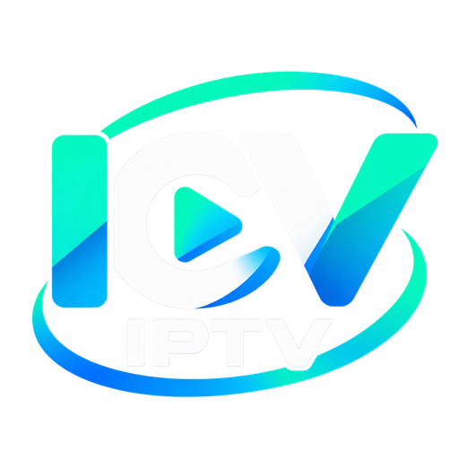
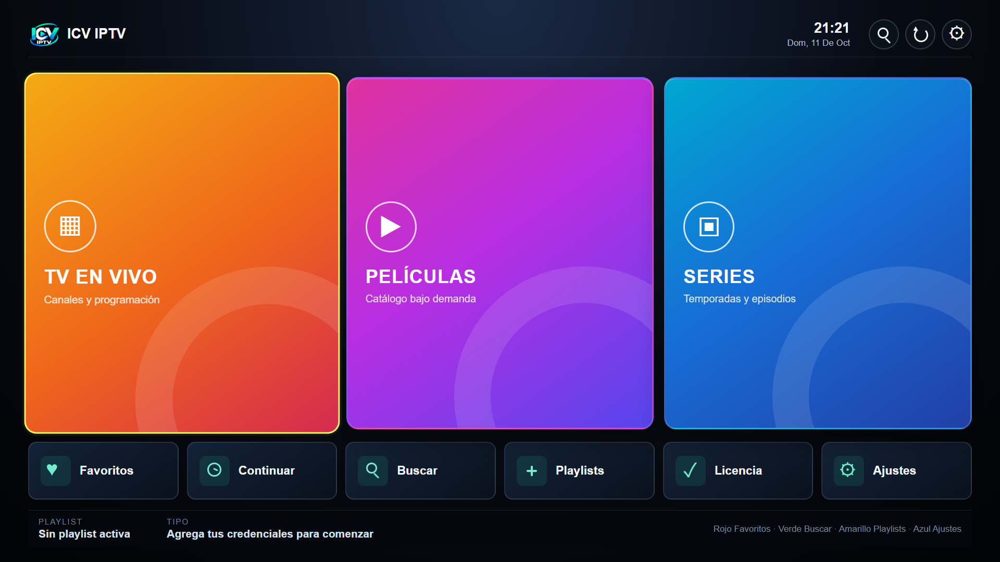
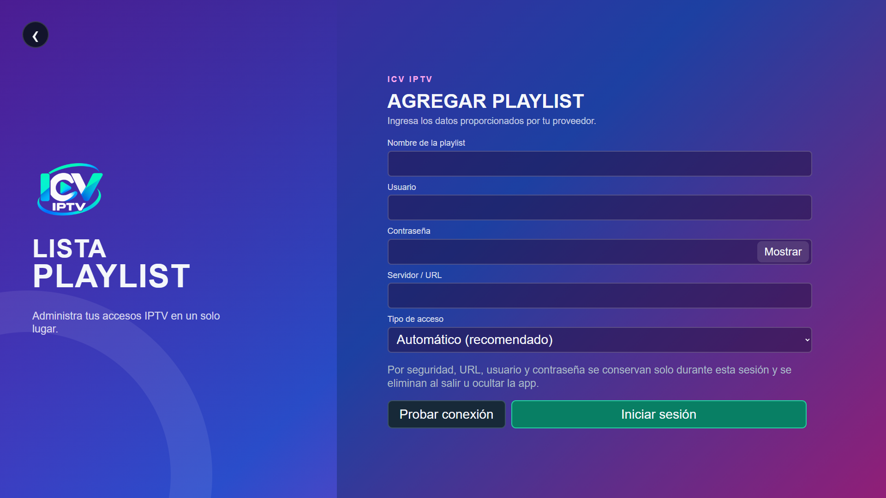
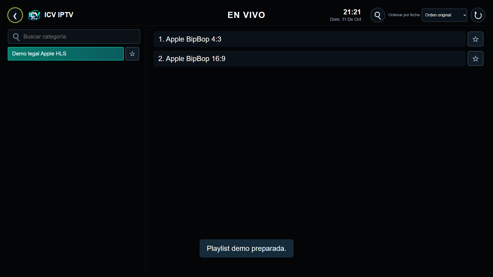
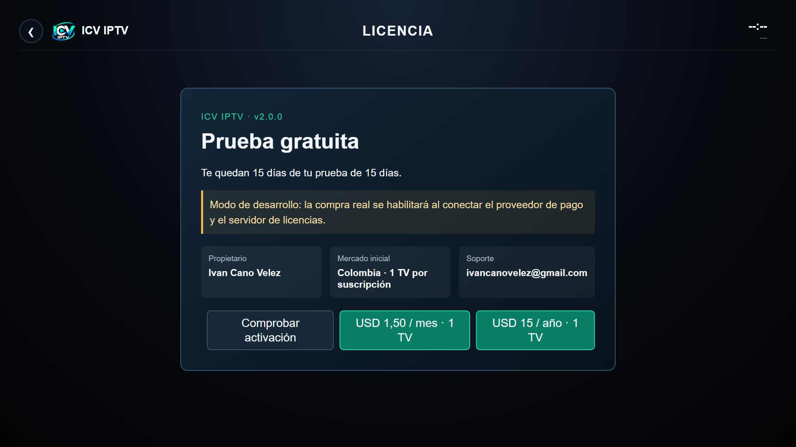

TV, películas y series
Explora categorías, busca títulos y continúa donde quedaste desde una interfaz unificada.

ICV IPTVEn preparación para LG Content Store
ICV IPTV es un reproductor para televisores LG webOS que reúne TV en vivo, películas y series desde las fuentes legales que tú configuras.
Lanzamiento inicial previsto en Colombia · Interfaz en español
CONTINUAR EXPLORANDO
Pantallas reales de la línea v2
Capturas directas de la aplicación candidata para LG Content Store, sin maquetas ni contenido comercial de terceros.




Pensada para el televisor
Una experiencia enfocada en navegación fluida, lectura a distancia y uso responsable de la memoria del TV.
Explora categorías, busca títulos y continúa donde quedaste desde una interfaz unificada.
Navega con puntero, rueda, flechas y botón OK, con foco visible y zonas de selección amplias.
Favoritos, historial, búsqueda, categorías guardadas y reanudación de contenido por cuenta local.
Renderizado progresivo, caché limitada y perfiles de memoria para distintas generaciones de webOS.
La versión comercial excluye categorías adultas y no ofrece mecanismos para desbloquearlas.
Cómo funcionará
Descárgala desde LG Content Store cuando esté disponible.
Agrega una lista M3U o un acceso compatible que estés autorizado a utilizar.
Explora la experiencia antes de elegir una suscripción.
La licencia comercial permitirá una instalación activa por suscripción.
Planes previstos
La moneda efectiva, impuestos y condiciones se mostrarán antes de cualquier compra conforme al contrato final del procesador.
Mensual
Trimestral
Anual
Pago único
ICV IPTV no vende canales, listas ni suscripciones de contenido. Los planes corresponden únicamente a la licencia de uso de la aplicación.
Uso responsable
ICV IPTV no incluye canales, películas, series, listas ni cuentas de terceros. El usuario es responsable de contar con autorización para cada fuente y contenido configurado.
Preguntas frecuentes
No. Es un reproductor y organizador. Cada usuario configura una fuente propia que esté autorizado a utilizar.
El lanzamiento inicial está previsto para Colombia, con interfaz y soporte en español.
No. Cada compra se vincula a una sola TV y no se transfiere a otro equipo. Para otra TV se requiere otra compra.
La prueba de 7 días se habilitará cuando el servicio comercial y su sistema de licencias estén listos.
Esta página informativa no usa formularios, cuentas ni rastreadores. GitHub puede registrar información técnica de acceso según sus propias políticas.
Soporte directo
Escríbenos y cuéntanos el modelo de tu TV LG y la versión de webOS.
icvstore01@gmail.com